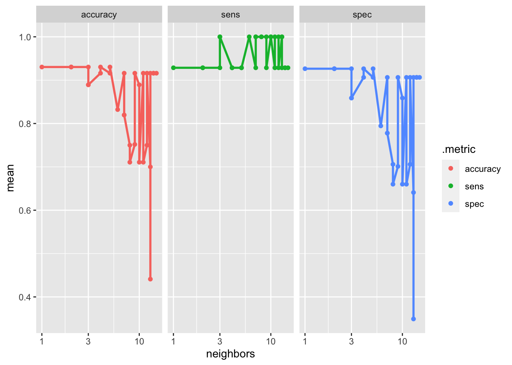

library(tidyverse)
library(reticulate)
pythainlp <- import("pythainlp")Text PreProcessing
Prerequired
เนื้อหาในบทความนี้จะกล่าวถึงการจัดระเบียบและจัดกระทำข้อมูลแบบข้อความด้วย R และ library PyThaiNLP ของ Python ก่อนการดำเนินการผู้วิเคราะห์จำเป็นต้องดำเนินการติดตั้งโปรแกรมและ library ที่จำเป็นก่อนดังนี้
- ติดตั้ง R และ RStudio
- ติดตั้ง Python และดำเนินการตั้งค่าตามขั้นตอนในลิงค์ https://support.posit.co/hc/en-us/articles/360023654474-Installing-and-Configuring-Python-with-RStudio
- ติดตั้ง package reticulate บน R โดยพิมคำสั่ง
install.packages("reticulate")บน R console - ติดตั้ง PyThaiNLP โดยเข้าไปที่หน้า Terminal ใน RStudio จากนั้นพิมพ์คำสั่ง
pip install pythainlp
เมื่อดำเนินการในขั้นตอนทั้ง 4 เรียบร้อยแล้ว ขั้นตอนต่อมาคือการเรียกใช้ library pythainlp บน R โดยพิมพ์คำสั่งดังนี้
เอกสารอ้างอิง
Introduction
การทำ text preprocessing เป็นขั้นตอนสำคัญสำหรับการดำเนินการวิเคราะห์ข้อความ วัตถุประสงค์ของการดำเนินงานในขั้นตอนนี้คือเพื่อ (1) จัดระเบียบและทำความสะอาดข้อความแบบข้อความ เพื่อสร้างชุดข้อมูลที่มีโครงสร้างจากข้อความดิบ และ (2) จัดกระทำข้อมูลเพื่อให้อยู่ในรูปแบบที่มีความสอดคล้องกับการวิเคราะห์ตามวัตถุประสงค์
การทำ text preprocessing มีเทคนิคเฉพาะหลายตัวซึ่งผู้เรียนจำเป็นต้องรู้จักไว้ การเลือกใช้เทคนิคต่าง ๆ ขึ้นอยู่กับความต้องการของเทคนิคการวิเคราะห์ที่เลือกใช้ หรือสภาพ/ปัญหาที่พบในข้อมูลแต่ละชุด เทคนิคดังกล่าวมีดังนี้
- Lowercasing: คือการแปลงตัวอักษรตัวใหญ่ให้เป็นตัวเล็ก (ใช้ในภาษาอังกฤษ)
- Tokenization: คือการแปลงข้อความออกเป็นส่วนย่อย ๆ เช่น คำ/วลี หรือประโยค ที่สามารถนำไปวิเคราะห์ได้อย่างมีความหมาย ส่วนย่อยของข้อความดังกล่าวเรียกว่า tokens
- Stopword removal: stopword คือคำที่ไม่ให้ความหมายหรือไม่ได้มีประโยชน์ในการตีความหมายของข้อความ โดยมากมักเป็นคำเชื่อมหรือคำลงท้ายที่เขียนเพื่อให้ประโยคมีความสมบูรณ์มากขึ้น เช่น a, is, are, and, the หรือในภาษาไทย เช่น ที่ ซึ่ง อัน และ
- Stemming: เป็นเทคนิคการแปลงประเภทหนึ่ง มีวัตถุประสงค์เพื่อลดรูปคำที่พบในข้อความให้กลับไปเป็นรากศัพท์ (root words) ของคำ ๆ นั้น เช่น running, runs หรือ ran ทั้งหมดนี้มาจาก stem เดียวกันคือ run ดังนั้นการทำ stemming จะช่วยลด noise ที่เกิดขึ้นโดยจะจัดกลุ่มคำที่มีความหมายเหมือนกันดังกล่าวให้กลายเป็นคำเดียวกัน
- Lemmatization: เป็นเทคนิคที่คล้ายกับ stemming แต่มีความซับซ้อนกว่า กล่าวคือเป็นการแปลง/ลดรูปคำที่พบโดยใช้บริบทของข้อความและการวิเคราะห์ morphological (morphological analysis) ซึ่งช่วยให้คำที่ผ่านกระบวนการดังกล่าวจะมีความหมาย และสอดคล้องกับบริบทของข้อความ
- Removing special character and punctuation: เป็นการคัดกรองสัญลักษณ์หรืออักขระที่ไม่จำเป็นออกไปจากการวิเคราะห์ เป็นเทคนิคที่ดำเนินการเพื่อลด noise ออกจากข้อมูล
- Removing HTML tags and URLs: ในกรณีที่ข้อมูลถูก scrapping จาก website การวิเคราะห์ข้อความดังกล่าวอาจจะต้องมีการลบ HTML tags หรือ URL รวมทั้ง syntax อื่น ๆ ที่ติดมากับข้อความด้วยก่อนดำเนินการวิเคราะห์
- Spell checking and correction: เนื่องจากข้อความอาจมีการพิมพ์ผิดพลาดหรือคลาดเคลื่อนมาจากต้นทางของข้อมูล การแก้ไขคำผิดดังกล่าวจะช่วยให้การวิเคราะห์/นำเสนอความหมายสามารถทำได้อย่างถูกต้องและคงเส้นคงวามากขึ้น
- n-grams: คือคำภายในข้อความที่ต่อเนื่องกันเป็นลำดับจำนวน n คำ การดึงคำแบบ n-gram ขึ้นมาจะช่วยให้ได้ข้อมูลเกี่ยวกับความหมายและบริบทของข้อความนั้นได้ดีขึ้น
ในเชิงปฏิบัติผู้วิเคราะห์จะต้องเป็นผู้พิจารณาว่าจะเลือกใช้เทคนิคใดบ้างมาทำ text preprocessing ในงานของตนเอง ต้องอย่าลืมว่ากระบวนการ text preprocessing เป็นกระบวนการทวนซ้ำที่อาจจะต้องใช้เวลาและลองผิดลองถูกหลายรอบจนกว่าจะได้ผลการวิเคราะห์ที่มีความสมบูรณ์ นอกจากนี้เทคนิคดังกล่าวยังอาจมีการใช้งานที่แตกต่างกันในภาษาต่าง ๆ ที่ผู้วิเคราะห์ทำงานด้วย ส่วนที่เหลือของบทความนี้จะกล่าวถึงการใช้เทคนิคข้างต้นนการทำ text preprocessing โดยเน้นการใช้งานสำหรับภาษาไทย รายละเอียดมีดังนี้
Tokenization
การตัดคำ (tokenization) เป็นเทคนิคพื้นฐานที่สำคัญสำหรับการทำ text preprocessing ในการประมวลผลภาษาธรรมชาติ (NLP) กระบวนการนี้เป็นส่วนสำคัญที่สุดส่วนหนึ่งเพราะเป็นการแปลงข้อมูลข้อความที่ไม่มีโครงสร้าง (unstructure) ให้เป็นข้อมูลที่มีโครงสร้าง (structure) การแบ่งส่วนของข้อความออกเป็นส่วนย่อย เช่น คำ (words) วลี (phrases) หรือประโยค (sentences) ที่มีความหมาย ทั้งนี้การเลือกว่าควรใช้การแบ่งคำลักษณะไหนขึ้นอยู่กับบริบทของข้อความ และความละเอียดของผลการวิเคราะห์ที่ต้องการ tokenization อาจจำแนกได้เป็น 3 ประเภท ได้แก่
- Word tokenization
- Sentence tokenization
- Subword tokenization
Word tokenization
work tokenization หรือการตัดคำเป็นเทคนิคการแบ่งข้อความออกเป็นคำ ซึ่งสามารถทำได้หลายลักษณะ ทั้งการตัดคำด้วยเครื่องหมายวรรคตอนหรืออักขระที่กำหนด หรือการตัดคำด้วยอัลกอริทึม การตัดคำเป็นเทคนิคที่ใช้อย่างมากในกระบวนการวิเคราะห์ข้อความ เช่น การวิเคราะห์ sentiment หรือการจำแนกข้อความ
การตัดคำภาษาไทยสามารถทำได้อย่างมีประสิทธิภาพมากขึ้นด้วย libraryPyThaiNLP ที่ถูกพัฒนาขึ้นบนภาษา Python และสามารถเรียกใช้ได้บนภาษา R ผ่าน package reticulate โดยฟังก์ชันที่ใช้สำหรับตัดคำคือ word_tokenize()
ฟังก์ชัน word_tokenize() มีพารามิเตอร์ที่สามารถกำหนดเพื่อปรับเปลี่ยนการทำงานได้หลายตัว พารามิเตอร์จำเป็นได้แก่ text เป็นข้อความนำเข้าสำหรับฟังก์ชัน ส่วนพารามิเตอร์ engine ใช้สำหรับกำหนดอัลกอริทึมเพื่อตัดคำภายในประโยคที่กำหนด อัลกอริทึมที่แตกต่างกันมีผลให้การตัดคำที่ได้อาจมีความแตกต่างกัน ค่าเริ่มต้นของพารามิเตอร์นี้คือ engine = "newmm" เป็นวิธีการตัดคำโดยพยายามให้คำที่ตัดมีความสอดคล้องกับคำภายในพจนานุกรมภาษาไทยมากที่สุด ส่วนวิธีการอื่น ๆ ที่สามารถกำหนดได้ เช่น longest, icu หรือ deepcut เป็นต้น อีกพารามิเตอร์หนึ่งที่มีประโยชน์มากคือ keep_whitespace โดยมีค่าเริ่มต้นเท่ากับ True ซึ่งหมายถึงการเก็บเว้นวรรคไว้ในผลการตัดคำ ในกรณีที่ผู้วิเคราะห์ต้องการให้นำเครื่องหมายเว้นวรรคทั้งหมดออกจากผลการตัดคำให้กำหนดพารามิเตอร์นี้เป็น False
ตัวอย่างต่อไปนี้แสดงการใช้ฟังก์ชันดังกล่าวเพื่อตัดคำในประโยคที่กำหนด
text <- "ส่วนเบี่ยงเบนมาตรฐานให้วัดการกระจายสัมบูรณ์ แต่สัมประสิทธิ์การแปรผันใช้วัดการกระจายสัมพัทธ์"
tokennized_text <- pythainlp$word_tokenize(text)
tokennized_text [1] "ส่วน" "เบี่ยงเบน" "มาตรฐาน" "ให้" "วัด" "การ"
[7] "กระจาย" "สัมบูรณ์" " " "แต่" "สัมประสิทธิ์" "การ"
[13] "แปรผัน" "ใช้" "วัด" "การ" "กระจาย" "สัมพัทธ์" ตัวอย่างต่อไปนี้แสดงผลการตัดคำด้วยฟังก์ชัน word_tokenize() ที่มีการกำหนดพารามิเตอร์ต่าง ๆ
#default
pythainlp$word_tokenize(text) [1] "ส่วน" "เบี่ยงเบน" "มาตรฐาน" "ให้" "วัด" "การ"
[7] "กระจาย" "สัมบูรณ์" " " "แต่" "สัมประสิทธิ์" "การ"
[13] "แปรผัน" "ใช้" "วัด" "การ" "กระจาย" "สัมพัทธ์" # longest engine
pythainlp$word_tokenize(text, engine = "longest") [1] "ส่วน" "เบี่ยงเบน" "มาตรฐาน" "ให้" "วัด" "การก"
[7] "ระ" "จา" "ย" "สัมบูรณ์" " " "แต่"
[13] "สัมประสิทธิ์" "การแปร" "ผัน" "ใช้" "วัด" "การก"
[19] "ระ" "จา" "ย" "สัมพัทธ์" # keep whitespace = False
pythainlp$word_tokenize(text, engine = "longest",
keep_whitespace = F) [1] "ส่วน" "เบี่ยงเบน" "มาตรฐาน" "ให้" "วัด" "การก"
[7] "ระ" "จา" "ย" "สัมบูรณ์" "แต่" "สัมประสิทธิ์"
[13] "การแปร" "ผัน" "ใช้" "วัด" "การก" "ระ"
[19] "จา" "ย" "สัมพัทธ์" # use deepcut and keep whitespace = False
pythainlp$word_tokenize(text, engine = "deepcut",
keep_whitespace = F) [1] "ส่วน" "เบี่ยงเบน" "มาตรฐาน" "ให้" "วัด" "การ"
[7] "กระจาย" "สัมบูรณ์" "แต่" "สัมประสิทธิ์" "การ" "แปร"
[13] "ผัน" "ใช้" "วัด" "การ" "กระจาย" "สัมพัทธ์" ผลการตัดคำข้างต้นจะเห็นว่าการใช้อัลกอริทึม newmm และ deepcut มีแนวโน้มที่จะได้คำที่มีความหมายถูกต้องมากที่สุด อย่างไรก็ตามจะเห็นว่ามีคำศัพท์เฉพาะที่มีการตัดคำที่ยังไม่ถูกต้อง ได้แก่ ส่วนเบี่ยงเบนมาตรฐาน การกระจายสัมบูรณ์ สัมประสิทธิ์การแปรผัน และการกระจายสัมพัทธ์ ในกรณีนี้ผู้วิเคราะห์สามารถเพิ่มคำศัพท์เฉพาะที่ใช้สำหรับประกอบการตัดคำได้ดังนี้
trie <- pythainlp$tokenize$Trie
## custom word
custom_word <- c("ส่วนเบี่ยงเบนมาตรฐาน",
"การกระจายสัมบูรณ์",
"สัมประสิทธิ์การแปรผัน",
"การกระจายสัมพัทธ์")
## load thai dictionary from pythainlp
dict_default <- pythainlp$corpus$thai_words()
extended_dict <- trie(pythainlp$corpus$thai_words())
for (word in custom_word) {
extended_dict$add(word)
}pythainlp$word_tokenize(text, custom_dict = extended_dict) [1] "ส่วนเบี่ยงเบนมาตรฐาน" "ให้" "วัด"
[4] "การกระจายสัมบูรณ์" " " "แต่"
[7] "สัมประสิทธิ์การแปรผัน" "ใช้" "วัด"
[10] "การกระจายสัมพัทธ์" จากตัวอย่างข้างต้นจะเห็นว่า การกำหนด dictionary เพิ่มเติมทำให้ผู้วิเคราะห์สามารถตัดคำ/ดึงคำจากข้อความที่มีความหมายสอดคล้องกับบริบทของการวิเคราะห์ได้มากขึ้น
Sentences tokenization
เป็นเทคนิคการแบ่งข้อความออกเป็นประโยคหรือวลีย่อย โดยอาจใช้เว้นวรรคหรือเครื่องหมายจบประโยคต่าง ๆ เป็นตัวแบ่ง การทำ tokenization ลักษณะนี้เหมาะสำหรับงานวิเคราะห์ที่ต้องการสรุปความ (text summarization) ที่โครงสร้างของประโยคมีความสำคัญ
การทำ sentences tokenization ด้วย PyThaiNLP สามารถทำได้ด้วยฟังก์ชัน sent_tokenize() ทั้งนี้ก่อนการใช้ฟังก์ชันดังกล่าวผู้วิเคราะห์จำเป็นต้องติดตั้ง library python-crfsuite ก่อนโดยพิมพ์คำสั่งต่อไปนี้ใน terminal ของ R Studio
pip install python-crfsuiteฟังก์ชัน sent_tokenize() มีพารามิเตอร์ที่สำคัญ 2 ตัว ได้แก่ text เป็นข้อความนำเข้าสำหรับฟังก์ชัน ส่วนพารามิเตอร์ engine ใช้สำหรับกำหนดอัลกอริทึมเพื่อแบ่งประโยคจากข้อความที่กำหนด โดยมี 2 อัลกอริทึมให้เลือกได้แก่ ‘whitespace’ กับ ‘whitespace+newline’ ซึ่งเป็นการแบ่งประโยคด้วยช่องว่าง และการเว้นบรรทัด
pythainlp$sent_tokenize(text, engine = "whitespace")[1] "ส่วนเบี่ยงเบนมาตรฐานให้วัดการกระจายสัมบูรณ์"
[2] "แต่สัมประสิทธิ์การแปรผันใช้วัดการกระจายสัมพัทธ์"mytext <- readLines("mytext.txt")
temp<-pythainlp$sent_tokenize(text = mytext[1],engine = "whitespace+newline")
temp[1] "การวิเคราะห์การถดถอย"Stopword removal
Stopwords คือคำที่ไม่ให้ความหมายหรือไม่มีประโยชน์ในการตีความหมายของประโยคหรือข้อความเป้าหมาย เช่น a, and, the, และ หรือ อะ ซึ่งในชุดข้อมูลหากมีคำประเภทนี้อยู่มาก ๆ จะกลายเป็น noise ที่รบกวนการวิเคราะห์ ใน library pythainlp มีการรวบรวม stopwords สำหรับภาษาไทยเอาไว้พอสมควร ผู้วิเคราะห์สามารถนำมาใช้ได้ การเรียก stopword จาก pythinlp มาใช้สามารถทำได้ในทำนองเดียวกับการตัดคำดังนี้
stopword <- pythainlp$corpus$thai_stopwords
stopword<function thai_stopwords at 0x10d333130>อย่างไรก็ตาม stopword ข้างต้นอยู่ใน format แบบ frozenset ซึ่งไม่สามารถนำมาใช้บน R ได้โดยตรง การนำ stopword ดังกล่าวมาใช้บน R สามารถเขียนคำสั่งเพิ่มเติมได้ดังนี้
# python stopword script
stopword_fn <-"
def stopword():
import pythainlp
stopword = pythainlp.corpus.common.thai_stopwords()
stopword = list(stopword)
return stopword
"
py_run_string(stopword_fn)ผลลัพธ์ที่ได้จากการเรียก stopword จากฟังก์ชันใน python script ด้วย py_run_string() จะเก็บอยู่ใน object ชื่อ py ซึ่งจะเก็บในชื่อเดียวกับฟังก์ชันดังนี้
py$stopword() %>% head(20) [1] "คุณๆ" "ขาด" "กระนั้น" "เพิ่ง" "ส่วน"
[6] "นู่น" "เท่าใด" "เพียงใด" "คราวหลัง" "ตลอดวัน"
[11] "ยาก" "เห็น" "นอกเหนือจาก" "สมัยนั้น" "ประการ"
[16] "ๆ" "จึง" "เถอะ" "หน่อย" "เพิ่งจะ" pythainlp$corpus$thai_negations<function thai_negations at 0x10d3331c0>pythainlp$corpus$thai_syllables<function thai_syllables at 0x10d333010>นอกจาก stopword แล้ว pythainlp ยังมี dictionary ตัวอื่น ๆ ที่สามารถนำมาใช้ประโยชน์ได้ ได้แก่ พจนานุกรมคำปฏิเสธ thai_negations และพจนานุกรมพยางค์ thai_syllables ดังตัวอย่างต่อไปนี้
# negations dictionary
negations_fn <-"
def negations():
import pythainlp
stopword = pythainlp.corpus.common.thai_negations()
stopword = list(stopword)
return stopword
"
# syllables dictionary
syllables_fn<-"
def syllables():
import pythainlp
syllable = pythainlp.corpus.common.thai_syllables()
syllable = list(syllable)
return(syllable)
"
py_run_string(negations_fn)
py_run_string(syllables_fn)
py$negations() %>% head(20)[1] "ไม่" "แต่"py$syllables() %>% head(20) [1] "เพิ่ง" "คดี" "จี้" "สข." "บอย." "พัด" "ทอ" "ไบ" "เทสก์" "ตึ่ง"
[11] "เรือก" "หวิว" "เก" "ทารณ์" "ษิต" "ใช้" "คล่อง" "มณ" "ไมล์" "ฝรั่ง" วิเคราะห์คำตอบอัตนัยของผู้เรียน
ตัวอย่างส่วนนี้ผู้วิเคราะห์จะพัฒนาโมเดลตรวจคำตอบการบ้านของนิสิต ข้อมูลฝึกหัดได้จากผลการตอบการบ้านของนิสิตจำนวน 74 คน ในรายวิชา 2758501 ภาคปลาย ปีการศึกษา 2565 เรื่องการวิเคราะห์การถดถอย
library(tidyverse)
library(readxl)
# importing data
dat <- read_excel("traindataset_hw.xlsx")
glimpse(dat,60)Rows: 74
Columns: 29
$ Timestamp <dttm> 2023-04-19 14:36:46, 2023-04-19 15:…
$ Score <dbl> 0, 0, 0, 0, 0, 0, 0, 0, 0, 0, 0, 0, …
$ `รหัสนิสิต` <dbl> 6441127027, 6441153327, 6442505827, …
$ `ช่ือ นามสกุล` <chr> "ชลิต เชี่ยวเชิงงาน", "นายถิรนัย ธนัครสมบัติ"…
$ `ตอนเรียนที่` <dbl> 4, 4, 7, 4, 4, 7, 7, 8, 7, 7, 7, 9, …
$ text1 <chr> "mathach=13.9090-0.8267(stressclim)+…
$ result1 <dbl> 1, 1, 1, 1, 1, 1, 1, 1, 1, 1, 1, 1, …
$ remark1 <chr> "normal", "normal", "normal", "norma…
$ residual <chr> "https://drive.google.com/open?id=1V…
$ pic1 <dbl> 1, 1, 1, 1, 1, 1, 1, 1, 1, 1, 1, 1, …
$ hetoro <chr> "https://drive.google.com/open?id=1M…
$ pic2 <dbl> 1, 1, 1, 1, 1, 1, 1, 1, 1, 1, 1, 1, …
$ norm <chr> "https://drive.google.com/open?id=1Q…
$ pic3 <dbl> 1, 1, 1, 1, 1, 1, 1, 1, 1, 1, 1, 1, …
$ coll <chr> "https://drive.google.com/open?id=1q…
$ pic4 <dbl> 1, 1, 1, 1, 1, 1, 1, 1, 1, 1, 1, 1, …
$ text2 <chr> "ไม่มีปัญหาใด ๆ", "Linearity", "ไม่มีปัญหา…
$ result2 <chr> "1", "0", "1", "1", "1", "1", "1", "…
$ text3 <chr> "สมการถดถอยที่คำนวณมาได้นั้น นิสิตคิดว่ายังมีตัว…
$ result3 <dbl> 0, 1, 2, 1, 2, 1, 1, 1, 1, 1, 1, 0, …
$ text4 <chr> "ได้ จากการทดสอบสมมุติฐานพบว่าค่า p value…
$ result4 <dbl> 0.0, 1.0, 0.0, 1.0, 0.5, 0.0, 0.0, 0…
$ text5 <chr> "เมื่อกำหนดให้บรรยากาศความเครียดในการเรีย…
$ result5 <dbl> 1.0, 1.0, 1.0, 0.5, 1.0, 1.0, 1.0, 1…
$ text6 <chr> "จากสมการถดถอยข้างต้นนั้น mathach=13.909…
$ result6 <dbl> 2, 2, 2, 1, 1, 1, 1, 1, 2, 2, 2, 1, …
$ text7 <chr> "มี ได้แก่ 1. stressclim (บรรยากาศความเ…
$ result7 <dbl> 2, 2, 2, 2, 2, 2, 2, 2, 2, 2, 2, 2, …
$ `total score` <dbl> 11.0, 12.0, 13.0, 11.5, 12.5, 11.0, …คำถามที่จะนำมาทดลองพัฒนาโมเดลคือ “สมการถดถอยที่ประมาณได้มีความเหมาะสมที่จะใช้ทำนาย/อธิบายความสัมพันธ์ที่พบในข้อมูลหรือไม่ เพราะเหตุใด” แนวคำตอบของคำถามนี้คือ “เหมาะสม ด้วยเหตุผล 2 ประการ ประการแรก คือไม่พบหลักฐานว่ามีการละเมิดข้อตกลงเบื้องต้นของการวิเคราะห์การถดถอย และประการที่สอง ค่าสัมประสิทธิ์การตัดสินใจของสมการถดถอยที่ประมาณได้มีค่าเท่ากับ 0.697 แสดงว่าสมการสามารถอธิบายความผันแปรใน mathach ได้คิดเป็นร้อยละ 69.7 ซึ่งอยู่ในระดับที่สูง”
การให้คะแนนมีการให้คะแนน 3 ระดับ คือ 0, 1, 2 หมายถึงตอบผิด ตอบถูกบางส่วน และตอบถูกทั้งหมด การวิเคราะห์ด้านล่างแสดงการแจกแจงความถี่ของคะแนนที่ได้ซึ่งพบว่า ส่วนใหญ่สามารถตอบถูกได้บางส่วน และมีส่วนน้อยที่สามารถตอบถูกได้ทั้งหมด
dat$result3 %>% table().
0 1 2
12 57 5 data preprocessing
ผู้วิเคราะห์สร้างชุดข้อมูลใหม่สำหรับพัฒนาโมเดลก่อนดังนี้
hw3 <- dat %>% select(`รหัสนิสิต`,result3, text3)
head(hw3)# A tibble: 6 × 3
`รหัสนิสิต` result3 text3
<dbl> <dbl> <chr>
1 6441127027 0 สมการถดถอยที่คำนวณมาได้นั้น นิสิตคิดว่ายังมีตัวแปรบางประการที่ไม่มีความเหม…
2 6441153327 1 มีความเหมาะสม เพราะ แม้ว่าเมื่อใช้การวิเคราะห์สหสัมพันธ์แบบเพียร์สัน พบว่…
3 6442505827 2 เหมาะสมเพราะไม่ละเมิดข้อตกลงเบื้องต้นใดๆเลย และมีRscore อยู่ที่69.7%
4 6441193427 1 มีความเหมาะสมที่จะใช้ทำนาย/อธิบายความสัมพันธ์ที่พบในข้อมูล เพราะเศษเหลื…
5 6441140127 2 เหมาะสม เพราะจากการวิเคราะห์เศษเหลือ เมื่อพิจารณา Linearity, Nor…
6 6441037227 1 เหมาะสม เพราะ เมื่อพิจารณาสัมประสิทธิ์การตัดสินใจ (R2) พบว่ามีค่า 0.69…ขั้นตอนต่อมาจะทำ tokenization เพื่อแบ่งคำจากข้อความที่นิสิตตอบมา
# define tokenization function
tokenize_thai <- function(text) {
tokens <- lapply(text, pythainlp$word_tokenize, engine="newmm")
tokens_list <- lapply(tokens, function(x) {
paste(x, collapse = " ")})
tokens_list <- unlist(tokens_list)
return(tokens_list)
}
## tokenized via mutate function
temp<-hw3 %>%
mutate(token = tokenize_thai(text3))
head(temp$token,10) [1] "สมการ ถดถอย ที่ คำนวณ มา ได้ นั้น นิสิต คิด ว่า ยังมี ตัวแปร บางประการ ที่ ไม่ มี ความเหมาะสม กับ การ วิเคราะห์ เช่น จำนวน ร้อยละ ของ นักเรียน เพศหญิง ใน โรง เร ีน ซึ่ง อาจจะ ไม่ ถือว่า เป็น ดัชนี ชี้ วัด ว่า ค่าเฉลี่ย นั้น จะ เพิ่มขึ้น หรือ ลดลง อย่างไร ได้ จาก การ มี จำนวน นักเรียน หญิง ที่ เพิ่มขึ้น เป็นต้น"
[2] "มี ความเหมาะสม เพราะ แม้ว่า เมื่อ ใช้การ วิเคราะห์ สห สัมพันธ์ แบบ เพียร์ สัน พบ ว่า ตัวแปร สัดส่วน นักเรียน หญิง ภายใน โรงเรียน มี ความสัมพันธ์ เชิงเส้น กับ ตัวแปร ตาม ใน ระดับ ต่ำ ( r = - 2.70 ) ทำให้ ละเมิด ข้อตกลง แต่ เมื่อ ดู จาก แผนภาพ residual พบ ว่า มี การ กระจาย ของ เศษเหลือ ที่ มีแนวโน้ม เป็น เส้นตรง มี ความ เป็น Homoskedasticity (ฺ Breusch-Pagan = 1.04 , p = 0.792 ) และ ไม่ มีปัญหา Multicollinearity เนื่องจาก VIF ของ ทุก ตัวแปร อิสระ มีค่า น้อยกว่า 4"
[3] "เหมาะสม เพราะ ไม่ ละเมิด ข้อตกลง เบื้องต้น ใดๆ เลย และ มี Rscore อยู่ ที่ 69.7 %"
[4] "มี ความเหมาะสม ที่จะ ใช้ ทำนาย / อธิบาย ความสัมพันธ์ ที่ พบ ใน ข้อมูล เพราะ เศษเหลือ มี การ เ เจ กเ เจ ง แบบ ปกติ เศษเหลือ มี การ กระจาย ตัว รอบ เส้น สมการ ถดถอย อย่าง สม่ำเสมอ ใกล้เคียง กัน และ ไม่ มีค่า ผิดปกติ ที่ มีอิทธิพล ต่อ การประมาณ สมการ ถดถอย"
[5] "เหมาะสม เพราะ จาก การ วิเคราะห์ เศษเหลือ เมื่อ พิจารณา Linearity , Normality และ Homoscedasticity ไม่ พบ ปัญหา ละเมิด ข้อตกลง เบื้องต้น และ เมื่อ พิจารณา สัมประสิทธิ์ การตัดสินใจ บ่งบอก ว่า สมการ ถดถอย สามารถ อธิบาย ความแปรผัน ที่ เกิดขึ้น ใน ตัวแปร ตาม คิด เป็น ถึง ร้อยละ 70"
[6] "เหมาะสม เพราะ เมื่อ พิจารณา สัมประสิทธิ์ การตัดสินใจ ( R 2 ) พบ ว่า มีค่า 0.697 ซึ่ง มีค่า เข้าใกล้ 1 สรุป ได้ ว่า สมการ ถดถอย ที่ ประมาณ ได้ สามารถ ทำนาย ตัวแปร ตาม ได้ อย่าง แม่นยำ จึง เหมาะสม ที่จะ ใช้ ทำนาย / อธิบาย ความสัมพันธ์ ที่ พบ ใน ข้อมูล"
[7] "เหมาะสม เพราะ เมื่อ พิจารณา สัมประสิทธิ์ การตัดสินใจ ( R ^ 2 ) พบ ว่า มีค่า 0.697 ซึ่ง มีค่า เข้าใกล้ 1 สรุป ได้ ว่า สมการ ถดถอย ที่ ประมาณ ได้ สามารถ ทำนาย ตัวแปร ตาม ได้ แม่นยำ จึง เหมาะสม ที่จะ ใช้ ทำนาย ความสัมพันธ์ ที่ พบ ใน ข้อมูล"
[8] "เหมาะสม เพราะว่า พิจารณา จาก สัมประสิทธิ์ การตัดสินใจ ( R ^ 2 ) พบ ว่า มีค่า 0.697 ซึ่ง มีค่า เข้าใกล้ 1 ดังนั้น จะ ได้ ว่า สมการ ถดถอย ที่ ประมาณ ได้ สามารถ ทำนาย ตัวแปร ตาม ได้ อย่าง แม่นยำ สรุป จึง เหมาะสม ที่จะ ใช้ ทำนาย / อธิบาย ความสัมพันธ์ ที่ พบ ใน ข้อมูล"
[9] "R ^ 2 = 0.697 ดังนั้น สมการ ถดถอย ที่ ประมาณ ได้ มีประสิทธิภาพ ใน การ ทำนาย มาก เพราะ R ^ 2 มีค่า ใกล้เคียง 1"
[10] "R ^ 2 = 0.697 นั่น คือ สมการ ถดถอย ที่ ประมาณ ได้ มีประสิทธิภาพ ใน การ ทำนาย ตัวแปร ตาม ได้ แม่น มาก เพราะ มีค่า ใกล้เคียง 1" จะสังเกตเห็นว่าการตัดคำด้วย dictionary ของ pythainlp สามารถทำได้ดีพอสมควร แต่คำศัพท์ทางสถิติที่แปลเป็นภาษาไทยยังไม่สามารถตัดคำได้อย่างเหมาะสม ดังนั้นเพื่อให้การตัดคำทำได้อย่างมีประสิทธิภาพมากขึ้น ผู้วิเคราะห์จึงจะเพิ่มคำศัพท์ทางสถิติที่เกี่ยวข้องไว้ใน dictionary โดยเก็บคำศัพท์ดังกล่าวไว้ในไฟล์ mytext.txt
trie <- pythainlp$tokenize$Trie
## custom word
custom_word <- readLines("mytext.txt", skipNul = TRUE)
## load thai dictionary from pythainlp
dict_default <- pythainlp$corpus$thai_words()
extended_dict <- trie(pythainlp$corpus$thai_words())
for (word in custom_word) {
extended_dict$add(word)
}จากนั้นลองดำเนินการตัดคำใหม่ด้วย dictionary ข้างต้น
# define tokenization function
tokenize_thai <- function(text) {
tokens <- lapply(text, pythainlp$word_tokenize, engine="newmm",
custom_dict = extended_dict)
tokens_list <- lapply(tokens, function(x) {
paste(x, collapse = " ")})
tokens_list <- unlist(tokens_list)
return(tokens_list)
}
## tokenized via mutate function
temp<-hw3 %>%
mutate(token = tokenize_thai(text3))
head(temp$token,10) [1] "สมการถดถอย ที่ คำนวณ มา ได้ นั้น นิสิต คิด ว่า ยังมี ตัวแปร บางประการ ที่ ไม่ มี ความเหมาะสม กับ การ วิเคราะห์ เช่น จำนวน ร้อยละ ของ นักเรียน เพศหญิง ใน โรง เร ีน ซึ่ง อาจจะ ไม่ ถือว่า เป็น ดัชนี ชี้ วัด ว่า ค่าเฉลี่ย นั้น จะ เพิ่มขึ้น หรือ ลดลง อย่างไร ได้ จาก การ มี จำนวน นักเรียน หญิง ที่ เพิ่มขึ้น เป็นต้น"
[2] "มี ความเหมาะสม เพราะ แม้ว่า เมื่อ ใช้การ วิเคราะห์ สหสัมพันธ์ แบบ เพียร์สัน พบ ว่า ตัวแปร สัดส่วน นักเรียน หญิง ภายใน โรงเรียน มี ความสัมพันธ์เชิงเส้น กับ ตัวแปรตาม ใน ระดับ ต่ำ ( r = - 2.70 ) ทำให้ ละเมิด ข้อตกลง แต่ เมื่อ ดู จาก แผนภาพ residual พบ ว่า มี การกระจาย ของ เศษเหลือ ที่ มีแนวโน้ม เป็น เส้นตรง มี ความ เป็น Homoskedasticity (ฺ Breusch-Pagan = 1.04 , p = 0.792 ) และ ไม่ มีปัญหา Multicollinearity เนื่องจาก VIF ของ ทุก ตัวแปรอิสระ มีค่า น้อยกว่า 4"
[3] "เหมาะสม เพราะ ไม่ ละเมิด ข้อตกลงเบื้องต้น ใดๆ เลย และ มี Rscore อยู่ ที่ 69.7 %"
[4] "มี ความเหมาะสม ที่จะ ใช้ ทำนาย/อธิบายความสัมพันธ์ ที่ พบ ใน ข้อมูล เพราะ เศษเหลือ มี การ เ เจ กเ เจ ง แบบ ปกติ เศษเหลือ มี การกระจาย ตัว รอบ เส้น สมการถดถอย อย่าง สม่ำเสมอ ใกล้เคียง กัน และ ไม่ มีค่า ผิดปกติ ที่ มีอิทธิพล ต่อ การประมาณ สมการถดถอย"
[5] "เหมาะสม เพราะ จาก การวิเคราะห์เศษเหลือ เมื่อ พิจารณา Linearity , Normality และ Homoscedasticity ไม่ พบ ปัญหา ละเมิด ข้อตกลงเบื้องต้น และ เมื่อ พิจารณา สัมประสิทธิ์การตัดสินใจ บ่งบอก ว่า สมการถดถอย สามารถ อธิบาย ความแปรผัน ที่ เกิดขึ้น ใน ตัวแปรตาม คิด เป็น ถึง ร้อยละ 70"
[6] "เหมาะสม เพราะ เมื่อ พิจารณา สัมประสิทธิ์การตัดสินใจ ( R2 ) พบ ว่า มีค่า 0.697 ซึ่ง มีค่า เข้าใกล้ 1 สรุป ได้ ว่า สมการถดถอย ที่ ประมาณ ได้ สามารถ ทำนาย ตัวแปรตาม ได้ อย่าง แม่นยำ จึง เหมาะสม ที่จะ ใช้ ทำนาย/อธิบายความสัมพันธ์ ที่ พบ ใน ข้อมูล"
[7] "เหมาะสม เพราะ เมื่อ พิจารณา สัมประสิทธิ์การตัดสินใจ ( R ^ 2 ) พบ ว่า มีค่า 0.697 ซึ่ง มีค่า เข้าใกล้ 1 สรุป ได้ ว่า สมการถดถอย ที่ ประมาณ ได้ สามารถ ทำนาย ตัวแปรตาม ได้ แม่นยำ จึง เหมาะสม ที่จะ ใช้ ทำนาย ความสัมพันธ์ ที่ พบ ใน ข้อมูล"
[8] "เหมาะสม เพราะว่า พิจารณา จาก สัมประสิทธิ์การตัดสินใจ ( R ^ 2 ) พบ ว่า มีค่า 0.697 ซึ่ง มีค่า เข้าใกล้ 1 ดังนั้น จะ ได้ ว่า สมการถดถอย ที่ ประมาณ ได้ สามารถ ทำนาย ตัวแปรตาม ได้ อย่าง แม่นยำ สรุป จึง เหมาะสม ที่จะ ใช้ ทำนาย/อธิบายความสัมพันธ์ ที่ พบ ใน ข้อมูล"
[9] "R ^ 2 = 0.697 ดังนั้น สมการถดถอย ที่ ประมาณ ได้ มีประสิทธิภาพ ใน การทำนาย มาก เพราะ R ^ 2 มีค่า ใกล้เคียง 1"
[10] "R ^ 2 = 0.697 นั่น คือ สมการถดถอย ที่ ประมาณ ได้ มีประสิทธิภาพ ใน การทำนาย ตัวแปรตาม ได้ แม่น มาก เพราะ มีค่า ใกล้เคียง 1" สำรวจข้อมูลเบื้องต้น
library(tidytext)
temp<-temp %>%
unnest_tokens(input = token, output = word, token = "ptb") %>%
filter(!word %in% py$stopword()) %>%
#filter(!word %in% py$negations()) %>%
filter(!word %in% py$syllables())
temp %>%
# remove all numbers
mutate(word = str_replace_all(word, "\\d+", "")) %>%
# remove all english words
mutate(word = str_remove_all(word, "\\b(?!R2\\b|\\bR\\s?\\^\\s?2\\b)[A-Za-z]+\\b")) %>%
# correct word
mutate(word = str_replace(word, "อารีสแควร์","อาร์สแควร์"))%>%
#mutate(word = str_replace(word, "เหมาะสม","ความเหมาะสม")) %>%
#mutate(word = str_replace(word , "ถดถอย","สมการถดถอย")) %>%
# remove punctuation
mutate(word = str_remove(word, "^[[:punct:]]+$")) %>%
mutate(word = str_remove(word," ")) %>%
# remove unnescessary words
filter(!word %in% c("มีค่า","ที่จะ","=","นำมา","^","เ","ใกล้เคียง","ยังมี","ยกกำลัง","ทำการ","ใชต้รวจ","ขอ้","ืองตน้","ดังนั้น","ว่าการ",
"บางประการ","ทั้งสอง")) %>%
filter(!word %in% c(".",""))%>%
group_by(result3,word) %>%
count() %>%
arrange(desc(n)) %>%
head(20) %>%
ggplot(aes(x = n, y= reorder(word,n)))+
geom_col(aes(fill = factor(result3,
levels=c(0,1,2),
labels=c("ผิด","ถูกบางส่วน","ถูก"))))+
theme(text=element_text(family="ChulaCharasNew"))+
labs(fill = "ผลการตอบ")#install.packages("wordcloud2")
library(wordcloud2)
word_count<-temp %>%
# remove all numbers
mutate(word = str_replace_all(word, "\\d+", "")) %>%
# remove all english words
mutate(word = str_remove_all(word, "\\b(?!R2\\b|\\bR\\s?\\^\\s?2\\b)[A-Za-z]+\\b")) %>%
# correct word
mutate(word = str_replace(word, "อารีสแควร์","อาร์สแควร์"))%>%
#mutate(word = str_replace(word, "เหมาะสม","ความเหมาะสม")) %>%
#mutate(word = str_replace(word , "ถดถอย","สมการถดถอย")) %>%
# remove punctuation
mutate(word = str_remove(word, "^[[:punct:]]+$")) %>%
mutate(word = str_remove(word," ")) %>%
# remove unnescessary words
filter(!word %in% c("มีค่า","ที่จะ","=","นำมา","^","เ","ใกล้เคียง","ยังมี","ยกกำลัง","ทำการ","ใชต้รวจ","ขอ้","ืองตน้","ดังนั้น","ว่าการ",
"บางประการ","ทั้งสอง")) %>%
filter(!word %in% c(".",""))%>%
group_by(result3,word) %>%
count()
col<-ifelse(word_count[,1]==0,"maroon",
ifelse(word_count[,1]==1,"orange","steelblue"))
wordcloud2(data = word_count[,-1], size = 3, fontFamily = "ChulaCharasNew",
color = col, backgroundColor = "white",
shape = "square")จะเห็นว่าคำตอบของผู้เรียนมีแนวโน้มที่จะกล่าวถึงข้อตกลงเบื้องต้นของการวิเคราะห์การถดถอยว่ามีความเหมาะสมอย่างไร
ผลการวิเคราะห์ข้างต้นยังทำให้ผู้วิเคราะห์ทำความสะอาดข้อมูลไปได้ระดับหนึ่ง ขั้นตอนต่อไปคือจะนำข้อมูลที่จัดระเบียบและทำความสะอาดนี้ไปพัฒนาโมเดลตรวจคำตอบต่อไป
Training Classification models
การวิเคราะห์ในส่วนนี้เป็นการพัฒนาโมเดลทำนาย เพื่อตรวจคำตอบแบบข้อเขียนของนักเรียน การพัฒนาโมเดลประกอบด้วยขั้นตอนได้แก่ (1) การนำเข้าและจัดการข้อมูลก่อนการวิเคราะห์ (2) การแบ่งส่วนชุดข้อมูล (3) การกำหนดและระบุโมเดลทำนาย (4) การปรับแต่งค่า hyperparameters ด้วยเทคนิค cross-validation (5) การประเมินประสิทธิภาพของโมเดล และ (6) การนำโมเดลไปใช้ รายละเอียดมีดังนี้
1. การนำเข้าและจัดการข้อมูลก่อนการวิเคราะห์
ชุดข้อมูลที่ใช้พัฒนาโมเดลคือ traindataset_hw.xlsx สามารถนำเข้าได้ดังนี้
dat <- read_excel("traindataset_hw.xlsx")
names(dat) [1] "Timestamp" "Score" "รหัสนิสิต" "ช่ือ นามสกุล" "ตอนเรียนที่"
[6] "text1" "result1" "remark1" "residual" "pic1"
[11] "hetoro" "pic2" "norm" "pic3" "coll"
[16] "pic4" "text2" "result2" "text3" "result3"
[21] "text4" "result4" "text5" "result5" "text6"
[26] "result6" "text7" "result7" "total score"เปลี่ยนชื่อคอลัมน์บางตัวเพื่อให้สะดวกในการเรียกใช้งาน
names(dat)[3]<-"student_id"
names(dat)[4]<-"student_name"
names(dat)[5]<-"section"ผู้วิเคราะห์จะดำเนินการจัดการข้อมูลทั้งชุดก่อนตามขั้นตอนที่ได้ทำในการสำรวจข้อมูลเบื้องต้น รายละเอียดมีดังนี้
### ---- define tokenization function for Thai language
tokenize_thai <- function(text) {
tokens <- lapply(text, pythainlp$word_tokenize, engine="newmm",
custom_dict = extended_dict)
tokens_list <- lapply(tokens, function(x) {
paste(x, collapse = " ")})
tokens_list <- unlist(tokens_list)
return(tokens_list)
}
### ---- python stopword script
stopword_fn <-"
def stopword():
import pythainlp
stopword = pythainlp.corpus.common.thai_stopwords()
stopword = list(stopword)
return stopword
"
### ---- syllables dictionary
syllables_fn<-"
def syllables():
import pythainlp
syllable = pythainlp.corpus.common.thai_syllables()
syllable = list(syllable)
return(syllable)
"คำสั่งต่อไปนี้ใช้จัดเตรียมข้อมูล training dataset ทั้งหมด ทั้งนี้ผู้วิเคราะห์ได้ตรวจคำตอบตามแนวคำตอบที่กำหนดไว้แล้ว ผลการตรวจอยู่ใน column result3
q3_dat <- dat %>% select(student_id, result3, text3)library(tidymodels)
library(themis)
library(textrecipes)
## tokenized via mutate function
temp<-hw3 %>%
mutate(word = tokenize_thai(text3)) %>%
# remove all numbers
mutate(word = str_replace_all(word, "\\d+", "")) %>%
# remove all english words
mutate(word = str_remove_all(word, "\\b(?!R2\\b|\\bR\\s?\\^\\s?2\\b)[A-Za-z]+\\b")) %>%
# correct word
mutate(word = str_replace(word, "อารีสแควร์","อาร์สแควร์"))%>%
#mutate(word = str_replace(word, "เหมาะสม","ความเหมาะสม")) %>%
#mutate(word = str_replace(word , "ถดถอย","สมการถดถอย")) %>%
# remove punctuation
mutate(word = str_remove(word, "^[[:punct:]]+$")) %>%
mutate(word = str_remove(word," ")) %>%
# remove unnescessary words
filter(!word %in% c("มีค่า","ที่จะ","=","นำมา","^","เ","ใกล้เคียง","ยังมี","ยกกำลัง","ทำการ","ใชต้รวจ","ขอ้","ืองตน้","ดังนั้น","ว่าการ",
"บางประการ","ทั้งสอง")) %>%
filter(!word %in% c(".","")) %>%
filter(!word %in% py$stopword()) %>%
#filter(!word %in% py$negations()) %>%
filter(!word %in% py$syllables()) %>%
mutate(result3 = factor(result3, levels=c(0,1,2),
labels=c("ผิด","ถูก","ถูก")))
###----
recipe_obj <- recipe(result3~ word, data = temp) %>%
step_tokenize(word, token = "ptb") %>%
step_tfidf(word) %>%
step_normalize(all_numeric_predictors()) %>%
step_adasyn(result3)
### --- model specification
lasso_spec <- multinom_reg(penalty = tune(),
mixture = 1) %>%
set_engine("glmnet") %>%
set_mode("classification")
knn_spec <- nearest_neighbor(neighbors = tune(),
weight_func = tune())%>%
set_engine("kknn") %>%
set_mode("classification")
wf<- workflow_set(
preproc = list(recipe_obj),
models = list(lasso_spec, knn_spec)
)
fold<-vfold_cv(temp, v=10)
eval_metric <- metric_set(accuracy, sens, spec)
library(doMC)
registerDoMC(cores=15)
result <- wf %>%
workflow_map(
resamples = fold,
grid = 30,
metrics = eval_metric
)
result %>% autoplot() +
theme(legend.position = "top")+
scale_y_continuous(breaks=seq(0,1,0.1))result %>%
extract_workflow_set_result(id = "recipe_nearest_neighbor") %>%
collect_metrics() %>%
ggplot(aes(neighbors, mean, color = .metric)) +
geom_line(size = 1, show.legend = FALSE) +
geom_point()+
facet_wrap(~.metric) +
scale_x_log10()Warning: Using `size` aesthetic for lines was deprecated in ggplot2 3.4.0.
ℹ Please use `linewidth` instead.
result %>%
extract_workflow_set_result(id = "recipe_nearest_neighbor") %>%
collect_metrics() %>%
ggplot(aes(y=factor(weight_func),x= mean, fill = .metric)) +
geom_boxplot(size = 0.5, show.legend = FALSE) +
facet_wrap(~.metric)last_fit